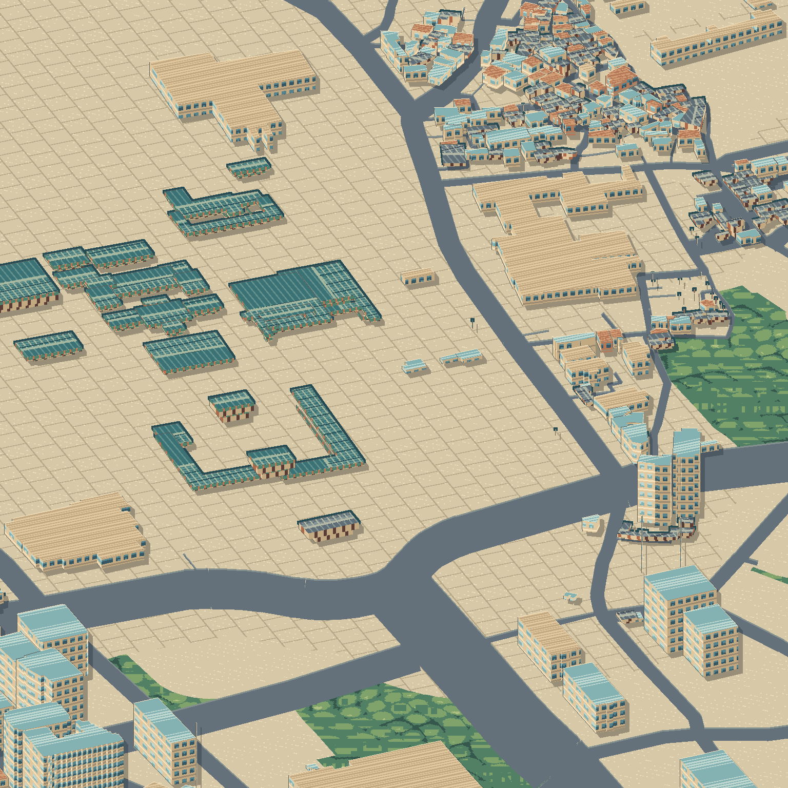

{{ p.name }}
♥ {{ p.likes }} · 사진 {{ p.photos }}장 · {{ p.cat }}
{{ p.name }}
{{ p.n }}
새 장소
PIXEL CITY
광화문 · 경복궁
AI
↵
{{ c.label }}
{{ o.label }}
☂ 비
HY
{{ d.icon }}
{{ d.label }}
{{ w.title }}
{{ w.sub }}
✕
{{ m.text }}
AI 추천 코스
{{ m.route.title }}
{{ m.route.meta }}
{{ s.n }}
{{ s.name }}
{{ s.walk }}
지도에 표시
저장
가이드가 코스를 짜고 있어요
…
{{ q.text }}
↑
{{ f.label }}
{{ f.user }}
{{ f.when }}
{{ f.tag }}
{{ f.title }}
{{ f.desc }}
♥ {{ f.likes }}
💬 {{ f.comments }}
▶ 따라가기
광화문 도감
명소를 방문 인증하면 픽셀 카드를 얻어요
{{ collected }}/{{ total }}
{{ c.rarity }}
{{ c.name }}
✉ 오늘의 픽셀 엽서 만들기
사진 {{ spot.photos }}장 · 사용자 업로드
{{ spot.cat }}
◎ 지도에서 보기
{{ spot.name }}
{{ spot.sub }}
♥ {{ spot.likes }}
{{ visitLabel }}
{{ spot.desc }}
#{{ t }}
댓글 {{ spot.commentCount }}
{{ c.user }}
{{ c.text }}
{{ k.label }}
{{ upHint }}
경유지 {{ draftCount }}
{{ draftWalk }}
{{ s.n }}
{{ s.name }}
제거
지도의 핀을 순서대로 클릭하세요
사진 끌어다 놓기
AI가 픽셀로 변환
픽셀 변환 미리보기
{{ upNameLabel }}
한 줄 소개
#{{ t.label }}
지도에 올리기
광화문 · 경복궁
SEOUL PIXEL CITY · {{ postDate }}
이미지 저장
친구에게 보내기
{{ routeTitle }}
{{ routeMeta }}
{{ s.n }}
다음 →
✕
+
−
{{ zoomLabel }}
NEW CARD!
{{ newCard.rarity }}
{{ newCard.name }}
도감 {{ collected }}/{{ total }} · 클릭하여 닫기
{{ toast }}